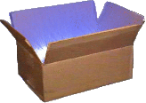

# Busybox
# 简介

BusyBox 是一个集成了一百多个最常用 Linux 命令和工具（如 cat、echo、grep、mount、telnet 等）的精简工具箱，它只需要几 MB 的大小，很方便进行各种快速验证，被誉为“Linux 系统的瑞士军刀”。
BusyBox 可运行于多款 POSIX 环境的操作系统中，如 Linux（包括 Android）、Hurd、FreeBSD 等。
# 获取官方镜像
在 Docker Hub 中搜索 busybox 相关的镜像。
$ docker search busybox
NAME DESCRIPTION STARS OFFICIAL AUTOMATED
busybox Busybox base image. 755 [OK]
progrium/busybox 63 [OK]
radial/busyboxplus Full-chain, Internet enabled, busybox made... 11 [OK]
odise/busybox-python 3 [OK]
multiarch/busybox multiarch ports of ubuntu-debootstrap 2 [OK]
azukiapp/busybox This image is meant to be used as the base... 2 [OK]
...
读者可以看到最受欢迎的镜像同时带有 OFFICIAL 标记，说明它是官方镜像。用户使用 docker pull 指令下载 busybox:latest 镜像：
$ docker pull busybox:latest
busybox:latest: The image you are pulling has been verified
e433a6c5b276: Pull complete
e72ac664f4f0: Pull complete
511136ea3c5a: Pull complete
df7546f9f060: Pull complete
Status: Downloaded newer image for busybox:latest
下载后，可以看到 busybox 镜像只有 2.433 MB：
$ docker image ls
REPOSITORY TAG IMAGE ID CREATED VIRTUAL SIZE
busybox latest e72ac664f4f0 6 weeks ago 2.433 MB
# 运行 busybox
启动一个 busybox 容器，并在容器中执行 grep 命令。
$ docker run -it busybox
/ # grep
BusyBox v1.22.1 (2014-05-22 23:22:11 UTC) multi-call binary.
Usage: grep [-HhnlLoqvsriwFE] [-m N] [-A/B/C N] PATTERN/-e PATTERN.../-f FILE [FILE]...
Search for PATTERN in FILEs (or stdin)
-H Add 'filename:' prefix
-h Do not add 'filename:' prefix
-n Add 'line_no:' prefix
-l Show only names of files that match
-L Show only names of files that don't match
-c Show only count of matching lines
-o Show only the matching part of line
-q Quiet. Return 0 if PATTERN is found, 1 otherwise
-v Select non-matching lines
-s Suppress open and read errors
-r Recurse
-i Ignore case
-w Match whole words only
-x Match whole lines only
-F PATTERN is a literal (not regexp)
-E PATTERN is an extended regexp
-m N Match up to N times per file
-A N Print N lines of trailing context
-B N Print N lines of leading context
-C N Same as '-A N -B N'
-e PTRN Pattern to match
-f FILE Read pattern from file
查看容器内的挂载信息。
/ # mount
overlay on / type overlay (rw,relatime,lowerdir=/var/lib/docker/overlay2/l/BOTCI5RF24AMC4A2UWF4N6ZWFP:/var/lib/docker/overlay2/l/TWVP5T5DMKJGXZOROR7CAPWGFP,upperdir=/var/lib/docker/overlay2/801ef0bf6cce35288dbb8fe00a4f9cc47760444693bfdf339ed0bdcf926e12a3/diff,workdir=/var/lib/docker/overlay2/801ef0bf6cce35288dbb8fe00a4f9cc47760444693bfdf339ed0bdcf926e12a3/work)
proc on /proc type proc (rw,nosuid,nodev,noexec,relatime)
tmpfs on /dev type tmpfs (rw,nosuid,size=65536k,mode=755)
devpts on /dev/pts type devpts (rw,nosuid,noexec,relatime,gid=5,mode=620,ptmxmode=666)
sysfs on /sys type sysfs (ro,nosuid,nodev,noexec,relatime)
tmpfs on /sys/fs/cgroup type tmpfs (ro,nosuid,nodev,noexec,relatime,mode=755)
cgroup on /sys/fs/cgroup/systemd type cgroup (ro,nosuid,nodev,noexec,relatime,xattr,release_agent=/lib/systemd/systemd-cgroups-agent,name=systemd)
cgroup on /sys/fs/cgroup/net_cls,net_prio type cgroup (ro,nosuid,nodev,noexec,relatime,net_cls,net_prio)
cgroup on /sys/fs/cgroup/freezer type cgroup (ro,nosuid,nodev,noexec,relatime,freezer)
cgroup on /sys/fs/cgroup/cpu,cpuacct type cgroup (ro,nosuid,nodev,noexec,relatime,cpu,cpuacct)
cgroup on /sys/fs/cgroup/cpuset type cgroup (ro,nosuid,nodev,noexec,relatime,cpuset)
cgroup on /sys/fs/cgroup/blkio type cgroup (ro,nosuid,nodev,noexec,relatime,blkio)
cgroup on /sys/fs/cgroup/perf_event type cgroup (ro,nosuid,nodev,noexec,relatime,perf_event)
cgroup on /sys/fs/cgroup/memory type cgroup (ro,nosuid,nodev,noexec,relatime,memory)
cgroup on /sys/fs/cgroup/devices type cgroup (ro,nosuid,nodev,noexec,relatime,devices)
cgroup on /sys/fs/cgroup/pids type cgroup (ro,nosuid,nodev,noexec,relatime,pids)
mqueue on /dev/mqueue type mqueue (rw,nosuid,nodev,noexec,relatime)
shm on /dev/shm type tmpfs (rw,nosuid,nodev,noexec,relatime,size=65536k)
/dev/vda1 on /etc/resolv.conf type ext3 (rw,noatime,data=ordered)
/dev/vda1 on /etc/hostname type ext3 (rw,noatime,data=ordered)
/dev/vda1 on /etc/hosts type ext3 (rw,noatime,data=ordered)
devpts on /dev/console type devpts (rw,nosuid,noexec,relatime,gid=5,mode=620,ptmxmode=666)
proc on /proc/bus type proc (ro,relatime)
proc on /proc/fs type proc (ro,relatime)
proc on /proc/irq type proc (ro,relatime)
proc on /proc/sys type proc (ro,relatime)
proc on /proc/sysrq-trigger type proc (ro,relatime)
tmpfs on /proc/acpi type tmpfs (ro,relatime)
tmpfs on /proc/kcore type tmpfs (rw,nosuid,size=65536k,mode=755)
tmpfs on /proc/keys type tmpfs (rw,nosuid,size=65536k,mode=755)
tmpfs on /proc/timer_list type tmpfs (rw,nosuid,size=65536k,mode=755)
tmpfs on /proc/sched_debug type tmpfs (rw,nosuid,size=65536k,mode=755)
tmpfs on /sys/firmware type tmpfs (ro,relatime)
busybox 镜像虽然小巧，但包括了大量常见的 Linux 命令，读者可以用它快速熟悉 Linux 命令。
# 相关资源
Busybox官网：https://busybox.net/Busybox官方仓库：https://git.busybox.net/busybox/Busybox官方镜像：https://hub.docker.com/_/busybox/Busybox官方仓库：https://github.com/docker-library/busybox
Alpine →